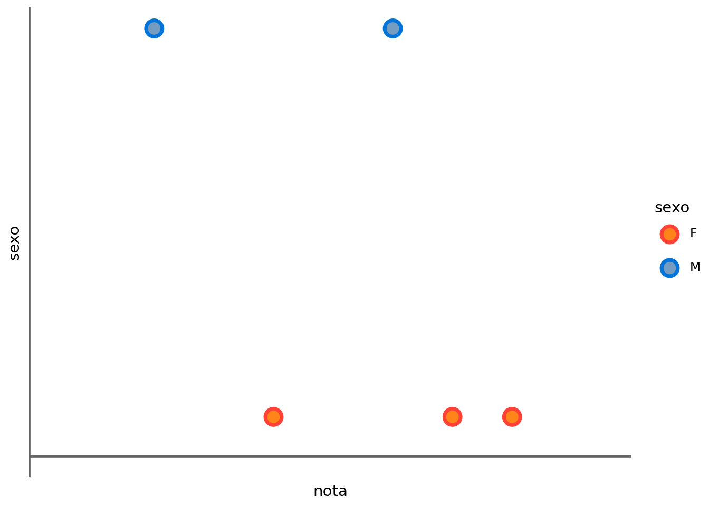
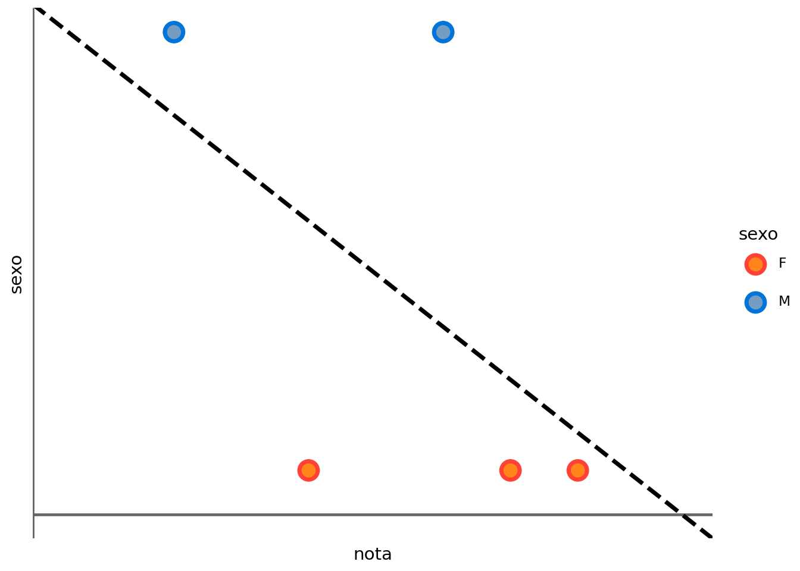
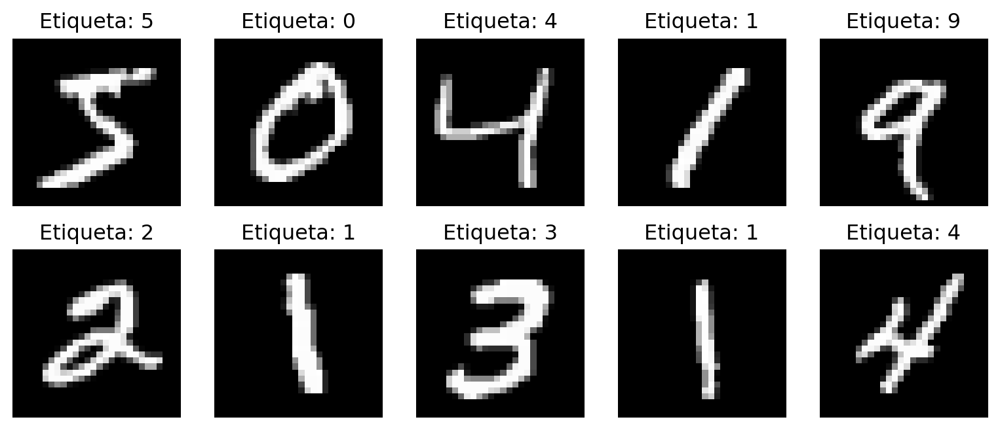
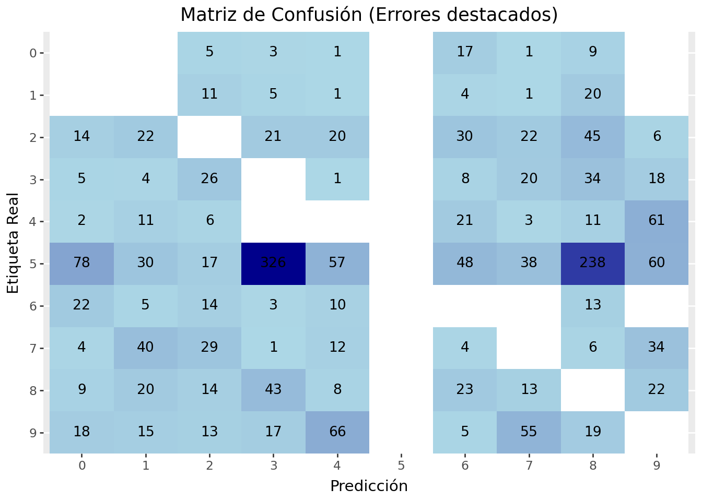
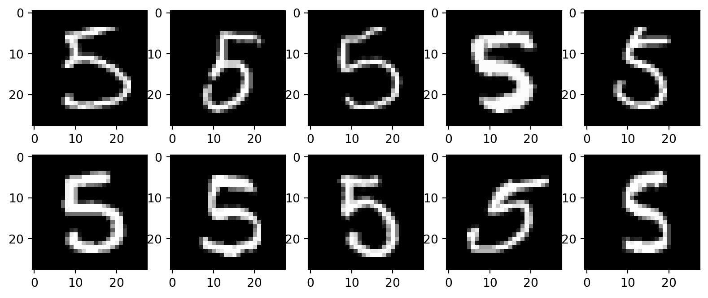

| horas_estudio | notas | sexo | sexo_dummy | |
|---|---|---|---|---|
| nombre | ||||
| Leo | 0 | 2 | M | 1 |
| Sara | 5 | 4 | F | 0 |
| Javier | 4 | 6 | M | 1 |
| Elena | 6 | 8 | F | 0 |
| Marta | 7 | 7 | F | 0 |
Regresión logística
Introducción
Supongamos que pretendemos explicar el sexo de una persona a partir de las notas obtenidas en un examen. En principio, puede parecer extraño este que queremos el sexo, ya que es algo que se determina por la biología y no por las notas obtenidas en un examen. Pero como se ha explicado anteriormente la modelización estadística trata de buscar correlaciones y no causalidades. Así que puede tener sentido saber si conocer la nota en un examen nos puede dar alguna indicación de su sexo. De hecho, en el capítulo anterior ya habíamos visto que las mujeres habían obtenido mejores notas que los hombres. Pero eso no responde a la pregunta que estamos formulando ahora: lo que queremos saber es si por ejemplo, sabemos que una persona ha obtenido una nota de 6, ¿qué es más probable que sea hombre o mujer?
Como primer intento de responder a esta pregunta, podríamos intentar ajustar un modelo de regresión lineal a los datos: Es decir, podríamos crear una variable dummy dependiente que represente el sexo de la persona (por ejemplo, 0 para mujeres y 1 para hombres) y realizar un ajuste de mínimos cuadrados usando cómo variable independiente las notas obtenidas en el examen:
Podemos representar gráficamente los datos de entrenamiento:

Aplicando el método de mínimos cuadrados, obtenemos el siguiente modelo:
b: 1.05, m: -0.12Podemos representar gráficamente el modelo ajustado:

Pero, ¿qué significa esa línea?. Para comprenderlo vamos a suponer que tenemos una persona que ha obtenido una nota de 6. Según el modelo ajustado, el sexo para esa persona sería:
1.05 + -0.12 * 6 = 0.33
¿Pero qué significa exactamente que el sexo de esa persona sea 0.33?. Recordemos que el sexo es una variable dummy que toma el valor de 0 para mujeres y 1 para hombres. Por lo tanto, el valor de 0.33 no tiene un significado claro, ya que no es ni 0 ni 1. Arbitrariamente podríamos decir que si el valor es mayor o igual a 0.5, entonces la persona es hombre, y si es menor a 0.5, entonces la persona es mujer.
Podríamos calcular cuál es el valor de la nota para el que el modelo predice que la persona es hombre o mujer:
\[ \begin{aligned} &\hat{y} = b + m \cdot x \\ &0.5 = b + m \cdot x \\ &x = \frac{0.5 - b}{m} \end{aligned} \]
Aplicando esta fórmula, obtenemos que el valor de la nota de corte para el que el modelo predice que la persona es hombre o mujer es:
4.57
Para notas inferiores a 4.57, el modelo predice que la persona es hombre, y para notas superiores el modelo predice que la persona es mujer.
Este tipo de modelos es conocido como modelo de clasificación. En los modelos de clasificación, la variable dependiente es una variable categórica (en este caso, el sexo) y el objetivo es predecir a qué categoría pertenece una observación a partir de las variables independientes (en este caso, las notas). Estos modelos se diferencian de los modelos de regresión, en los que la variable dependiente es una variable numérica y el objetivo es predecir un valor numérico a partir de las variables independientes.
Este capítulo podría finalizar aquí, sin embargo hay algo en este modelo que no es muy satisfactorio. Por ejemplo, el modelo predice con la misma seguridad que una persona con una nota de 0 es hombre que una persona con una nota ligeramente inferior a la nota de corte. Esto no tiene mucho sentido, ya que es más razonable pensar que una persona con una nota de 0 es más probable que sea hombre que una persona con una nota de 4.9. Nos gustaría construir un modelo que nos permita predecir la probabilidad de que una persona sea hombre o mujer a partir de sus notas, en lugar de predecir directamente el sexo. Para ello, vamos a introducir el modelo de regresión logística.
Modelado de probabilidades con regresión logística
En la regresión logística, en lugar de predecir directamente el sexo de una persona a partir de sus notas, lo que hacemos es predecir la probabilidad de que una tenga la categoría positiva (en este caso, que sea hombre). La categoría positiva es aquella que se codifica con el valor de 1 en la variable dummy.
Nota
Se habla de la categoría positiva sin animus iniuriandi, es simplemente una convención que se utiliza en estadística para referirse a la categoría que se codifica con el valor de 1 en la variable dummy. En este caso, hemos decidido que la categoría positiva es la de hombre, pero podríamos haber decidido que la categoría positiva es la de mujer, y entonces el modelo predeciría la probabilidad de que una persona sea mujer a partir de sus notas. Los resultados serían equivalentes, ya que la probabilidad de que una persona sea hombre es igual a 1 menos la probabilidad de que sea mujer.
Los paquetes estádisticos suelen ordenar las categoría alfabéticamente, por lo que la categoría positiva normalmente es la que va alfabéticamente después. En este caso, como “M” va después de “F”, la categoría positiva es la de hombre. Sin embargo, esto no es una regla estricta, y se puede cambiar.
Una primera aproximación sería lo que hicimos en la sección anterior. Es decir, podríamos especificar el modelo así:
\[ Prob(y = 1 | x) = b + m \cdot x \]
El problema de este modelo es que la probabilidad es una variable que toma valores entre 0 y 1, mientras que un modelo lineal anterior, al ser una recta, puede tomar cualquier valor real (es decir entre \(-\infty\) y \(\infty\)).
Podemos empezar a abordar este problema si en lugar de predecir directamente la probabilidad, predecimos la razón de probabilidades (odds ratio) de que una persona sea hombre a partir de sus notas:
\[ \frac{Prob(y = 1 | x)}{Prob(y = 0 | x)} = b + m \cdot x \]
Esto se puede simplificar dado que \(Prob(y = 0 | x) = 1 - Prob(y = 1 | x)\), por lo que el modelo se puede reescribir como:
\[ \frac{Prob(y = 1 | x)}{1 - Prob(y = 1 | x)} = b + m \cdot x \]
Algo hemos avanzado, ya que la razón de probabilidades es una variable que toma valores entre 0 y \(\infty\), pero todavía no es un modelo adecuado, ya que, como hemos dicho, los modelos lineales pueden tomar valores entre \(-\infty\) y \(\infty\). Para solucionar este problema, podemos usar el logaritmo de la razón de probabilidades. La función logarítmica toma valores positivos y los transforma en valores reales, por lo que el modelo se puede reescribir como:
\[ \log\left(\frac{Prob(y = 1 | x)}{1 - Prob(y = 1 | x)}\right) = b + m \cdot x \]
Advertencia
La razón de probabilidades toma valores entre \([0 y \infty]\), Será 0 cuando la categoría positiva tenga probabilidad 0. El logaritmo de 0 es \(-\infty\). Si se produce este valor, el modelo no se podrá ajustar, ya que cualquier operación con \(-\infty\) produce resultados no definidos. En la práctica, esto no suele ser un gran problema, ya que normalmente no se producen probabilidades en los extremos (0 y 1) pero sin llegar a ellos. Si se piensa detenidamente, en el ejemplo que estamos utilizando, siempre existirá una cierta probabilidad de que una persona con una nota de 0 sea mujer y de que una persona con una nota de 10 sea hombre, aunque esa probabilidad sea baja.
Nota
No hemos discutido la base del logaritmo a utilizar. En la práctica se suele utilizar el logaritmo natural, aunque también se podrían utilizar otras bases. La elección de la base del logaritmo no afecta a los resultados del modelo, ya que los logaritmos de una determinada base son transformaciones de escala de los logaritmos de otra base.
Con las transformaciones anteriores, hemos definido una la función que se llama logística. La función logística es lineal en los parámetros. Aunque ya no estamos prediciendo directamente la probabilidad, sino el logaritmo de la razón de probabilidades (logit). Ahora el problema es interpretar los resultados. Supongamos que en el modelo ajustado, el valor de \(b\) es -2 y el valor de \(m\) es 0.5. Si queremos predecir el sexo de una persona que ha estudiado 7 horas, obtenemos un logit de \(-2 + 0.5 \cdot 7 = 1.5\). Pero, ¿qué significa ese valor?. Para interpretarlo, podemos transformar el logit a una probabilidad. Para ello, podemos aplicar l, ¿el modelo predice que es hombre o que es mujer? Para ello, podemos aplicar las transformaciones inversas a las que hemos aplicado para definir el modelo. Es decir, podemos aplicar la función logística inversa, llamada más comúnmente funcion sigmoide, para obtener la probabilidad de que una persona sea hombre a partir del logit:
\[ \begin{aligned} &\log\left(\frac{Prob(y = 1 | x)}{1 - Prob(y = 1 | x)}\right) = b + m \cdot x \\ &\frac{Prob(y = 1 | x)}{1 - Prob(y = 1 | x)} = e^{b + m \cdot x} \\ &Prob(y = 1 | x) = e^{b + m \cdot x} - e^{b + m \cdot x} \cdot Prob(y = 1 | x) \\ &Prob(y = 1 | x) = \frac{e^{b + m \cdot x}}{1 + e^{b + m \cdot x}} \\ &Prob(y = 1 | x) = \frac{1}{1 + e^{-(b + m \cdot x)}} \end{aligned} \]
Obsérvese que la función sigmoide ya no es lineal en los parámetros y que toma valores entre 0 y 1.
Función de pérdida de la regresión logística
Podríamos tratar de utilizar como función de pérdida la suma cuadrática de los errores (SSR) que habíamos utilizado para la regresión lineal, pero esta función de pérdida no es adecuada para la regresión logística. En su lugar, se suele utilizar la función de pérdida de entropía cruzada (cross-entropy loss), que es una función convexa y que tiene un único mínimo global. Sin embargo, para entender la función de pérdida de entropía cruzada, vamos a empezar por intentar utilizar la suma cuadrática de los errores (SSR) pero aplicada a la probabilidad predicha por el modelo en lugar de al logit:
\[ \begin{aligned} &SSR = \sum_{i=1}^{n} (y_i - \hat{y}_i)^2 \\ &SSR = \sum_{i=1}^{n} \left(y_i - \frac{1}{1 + e^{-(b + m \cdot x_i)}}\right)^2 \end{aligned} \]
Esta función de pérdida tiene un problema, y es que no penaliza lo suficiente las predicciones incorrectas. Por ejemplo, si el modelo predice una probabilidad de 0.99 para una persona que es mujer (es decir, que la categoría positiva es hombre), el error cuadrático será de \((0 - 0.99)^2 = 0.981\), Por el contrario, si el modelo acierta y predice una probabilidad de 0.01, el error cuadrático será de \((0 - 0.01)^2 = 0.0001\). La diferencia entre lo que aporta a la función de pérdida una predicción muy incorrecta y muy correcta no es apenas apreciable. Para solucionar este problema, se utiliza la función de pérdida de entropía cruzada, que penaliza mucho más las predicciones incorrectas. La función de pérdida de entropía cruzada se define de la siguiente manera:
\[ \begin{aligned} &CE = -\sum_{i=1}^{n} \left(y_i \cdot \log(\hat{y}_i) + (1 - y_i) \cdot \log(1 - \hat{y}_i)\right) \\ &CE = -\sum_{i=1}^{n} \left(y_i \cdot \log\left(\frac{1}{1 + e^{-(b + m \cdot x_i)}}\right) + (1 - y_i) \cdot \log\left(1 - \frac{1}{1 + e^{-(b + m \cdot x_i)}}\right )\right) \end{aligned} \]
Obsérvese que siempre uno de los términos del sumatorio será 0, ya que \(y_i\) solo puede tomar los valores de 0 o 1. Por ejemplo, si \(y_i\) es 1, entonces el término \((1 - y_i) \cdot \log(1 - \hat{y}_i)\) será 0, y si \(y_i\) es 0, entonces el término \(y_i \cdot \log(\hat{y}_i)\) será 0.
Veamos qué valores toma la función de pérdida de entropía cruzada para las predicciones correctas e incorrectas:
Supongamos que el modelo predice una probabilidad de 0.99 para una persona que es hombre (es decir, que la categoría positiva es hombre), entonces el error de entropía cruzada será de \(- (1 \cdot \log(0.99) + 0 \cdot \log(1 - 0.99)) = -\log(0.99) \approx 0.010\).
Supongamos que el modelo predice una probabilidad de 0.01 para una persona que es hombre (es decir, que la categoría positiva es hombre), entonces el error de entropía cruzada será de \(- (1 \cdot \log(0.01) + 0 \cdot \log(1 - 0.01)) = -\log(0.01) \approx 4.605\).
Ahora la contribución a la función de pérdida es mucho mayor. El mismo razonamiento se puede aplicar para una persona que es mujer.
Esta razón y otras de índole estadística y matemática hacen que la función de pérdida de entropía cruzada sea la función de pérdida más adecuada para la regresión logística.
Ajuste del modelo de regresión logística con Pytorch
A diferencia de la regresión lineal, el modelo de regresión logística no tiene una solución analítica, por lo que es necesario utilizar un método numérico para ajustar el modelo a los datos, como el descenso de gradiente. Para evitar que tener que calcular las derivadas podemos recurrir a Pytorch para hacer el entrenamiento. El proceso es muy similar al que habíamos visto para la regresión lineal:
import torch
import torch.nn as nn
import torch.optim as optim
y = torch.tensor(df['sexo_dummy'].values, dtype=torch.float32).view(-1, 1)
X = torch.tensor(df['notas'].values, dtype=torch.float32).view(-1, 1)
# Definir el modelo de regresión logística
class LogisticRegression(nn.Module):
def __init__(self, input_dim):
super(LogisticRegression, self).__init__()
self.linear = nn.Linear(input_dim, 1)
def forward(self, x):
return torch.sigmoid(self.linear(x))
# Inicializar el modelo, la función de pérdida y el optimizador
model = LogisticRegression(input_dim=1)
criterion = nn.BCELoss()
optimizer = optim.SGD(model.parameters(), lr=0.01)
# Entrenamiento del modelo
for epoch in range(3000):
optimizer.zero_grad()
outputs = model(X)
loss = criterion(outputs, y)
loss.backward()
optimizer.step()
optimizer.zero_grad()
for name, param in model.named_parameters():
if param.requires_grad:
print(f"{name}: {param.data}")
b = model.linear.bias.item()
m = model.linear.weight.item()linear.weight: tensor([[-0.3808]])
linear.bias: tensor([1.4506])Con este modelo, podemos predecir la probabilidad de que una persona sea hombre a partir de sus notas:
Haz clic para ver el código
nota_pred = 6
logit_pred = b + m * nota_pred
prob_pred = 1 / (1 + np.exp(-logit_pred))
Markdown(f"""
La probabilidad de que una persona con una nota de {nota_pred} sea hombre es de {prob_pred:.2f}
""")La probabilidad de que una persona con una nota de 6 sea hombre es de 0.30
También podríamos poner el modelo en modo evaluación y predecir directamente la probabilidad:
Haz clic para ver el código
model.eval()
notas = [0, 1, 2, 3, 4, 5, 6, 7, 8, 9, 10]
with torch.no_grad():
prob_pred = model(torch.tensor(notas, dtype=torch.float32).view(-1, 1))
for nota, prob in zip(notas, prob_pred):
print(f"Nota: {nota}, Probabilidad de ser hombre: {prob.item():.2f}")Nota: 0, Probabilidad de ser hombre: 0.81
Nota: 1, Probabilidad de ser hombre: 0.74
Nota: 2, Probabilidad de ser hombre: 0.67
Nota: 3, Probabilidad de ser hombre: 0.58
Nota: 4, Probabilidad de ser hombre: 0.48
Nota: 5, Probabilidad de ser hombre: 0.39
Nota: 6, Probabilidad de ser hombre: 0.30
Nota: 7, Probabilidad de ser hombre: 0.23
Nota: 8, Probabilidad de ser hombre: 0.17
Nota: 9, Probabilidad de ser hombre: 0.12
Nota: 10, Probabilidad de ser hombre: 0.09Regresión multinomial
En el caso de que la variable dependiente tenga más de dos niveles, el modelo de regresión logística se puede generalizar utilizando la función softmax en lugar de la función sigmoide. La función softmax es una generalización de la función sigmoide que permite predecir la probabilidad de que una observación pertenezca a cada una de las categorías posibles. En este caso, el modelo se puede escribir de la siguiente manera:
\[ \begin{aligned} &Prob(y = k | x) = \frac{e^{b_k + m_k \cdot x}}{\sum_{j=1}^{K} e^{b_j + m_j \cdot x}} \\ &\text{para } k = 1, 2, \ldots, K \end{aligned} \]
Donde \(K\) es el número de categorías posibles. Este modelo se conoce como regresión logística multinomial o regresión softmax. El proceso de ajuste del modelo es similar al que hemos visto para la regresión logística binaria, pero utilizando la función de pérdida de entropía cruzada para múltiples clases (cross-entropy loss for multiple classes) en lugar de la función de pérdida de entropía cruzada para dos clases (binary cross-entropy loss).
Clasificación de imágenes con regresión multinomial
Vamos a ver un ejemplo de cómo utilizar la regresión logística multinomial para clasificar imágenes. Para ello, vamos a utilizar el dataset de dígitos manuscritos (MNIST), que es un dataset muy utilizado en el ámbito del aprendizaje automático para la clasificación de imágenes. Este dataset contiene 70.000 imágenes de dígitos manuscritos (del 0 al 9) con una resolución de 28x28 píxeles. El objetivo es predecir el dígito que representa cada imagen a partir de los píxeles que la componen. El paquete torchvision de Pytorch proporciona una forma sencilla de cargar este dataset y preprocesarlo para su uso en modelos de aprendizaje automático.
Haz clic para ver el código
from torchvision import datasets, transforms
transform = transforms.Compose([transforms.ToTensor()])
train_dataset = datasets.MNIST(root='./data', train=True, transform=transform, download=True)
test_dataset = datasets.MNIST(root='./data', train=False, transform=transform, download=True)
imagen, etiqueta = train_dataset[0]El dataset de MNIST ya está dividido en un conjunto de entrenamiento y un conjunto de test. El conjunto de entrenamiento contiene 60000 imágenes, mientras que el conjunto de test contiene 10000 imágenes. Cada imagen es un tensor de 28x28 píxeles, y cada píxel es un valor entre 0.0 y 1.0 que representa la intensidad del píxel (0 para negro y 1 para blanco).
Podemos mostrar algunas imágenes aleatoriamente:
Haz clic para ver el código
import matplotlib.pyplot as plt
fig, axes = plt.subplots(2, 5, figsize=(10, 4))
for i in range(10):
row = i // 5
col = i % 5
axes[row, col].imshow(train_dataset[i][0].squeeze(), cmap='gray')
axes[row, col].set_title(f'Etiqueta: {train_dataset[i][1]}')
axes[row, col].axis('off')
plt.show()
Los 28x28 píxeles de cada imagen no dan información del número de que se trata. Así que podemos calcular el parámetro asociado a cada pixel. Así, este modelo tendrá 785 parámetros. Se suma un parámetro para incluir el sesgo.
Hasta ahora, hemos calculado el valor de la función de pérdida usando todos los datos de entrenamiento. En este caso, tenemos muchos datos d eentrenamiento y muchos parámetros, por lo que el proceso de entrenamiento sería muy lento. Para solucionar este problema, se suele utilizar el método de descenso de gradiente estocástico (stochastic gradient descent), que consiste en calcular la función de pérdida y actualizar los parámetros utilizando solo un subconjunto aleatorio de los datos de entrenamiento en cada iteración. Este subconjunto se llama mini-batch, y el tamaño del mini-batch es un hiperparámetro que se debe elegir adecuadamente para obtener buenos resultados. Ahora habrá dos iteraciones anidadas: una iteración sobre los mini-batches y otra iteración sobre las épocas. Una época es un ciclo completo a través de todo el conjunto de entrenamiento, mientras que un mini-batch es un subconjunto aleatorio de los datos de entrenamiento que se utiliza para calcular la función de pérdida y actualizar los parámetros en cada iteración.
Además, ahora vamo a poner los datos en un dataloader, que es un objeto que nos permite iterar sobre los datos de entrenamiento en mini-batches de forma sencilla.
Otra cuestión a tner en cuenta es que las imágenes tienen una forma de (1, 28, 28), es decir, tienen un canal de color (en este caso, el canal de intensidad) y una resolución de 28x28 píxeles. Para poder utilizar estas imágenes en un modelo de regresión logística multinomial, es necesario aplanar las imágenes para que cada imagen se convierta en un vector de 784 píxeles (28x28). Esto se puede hacer utilizando la función view de Pytorch.
El proceso de entrenamiento del modelo de regresión logística multinomial con descenso de gradiente estocástico se puede implementar de la siguiente manera:
Haz clic para ver el código
from torch.utils.data import DataLoader
train_loader = DataLoader(train_dataset, batch_size=64, shuffle=True)
class MultinomialLogisticRegression(nn.Module):
def __init__(self, input_dim, output_dim):
super(MultinomialLogisticRegression, self).__init__()
self.linear = nn.Linear(input_dim, output_dim)
def forward(self, x):
return torch.softmax(self.linear(x), dim=1)
input_dim = imagen.shape[1] * imagen.shape[2]
output_dim = 10
model = MultinomialLogisticRegression(input_dim, output_dim)
criterion = nn.CrossEntropyLoss()
optimizer = optim.SGD(model.parameters(), lr=0.01)
num_epochs = 5
for epoch in range(num_epochs):
for images, labels in train_loader:
images = images.view(-1, input_dim)
optimizer.zero_grad()
outputs = model(images)
loss = criterion(outputs, labels)
loss.backward()
optimizer.step()
optimizer.zero_grad()
print(f'Epoch [{epoch+1}/{num_epochs}], Loss: {loss.item():.4f}')Epoch [1/5], Loss: 2.0181
Epoch [2/5], Loss: 1.9205
Epoch [3/5], Loss: 1.7709
Epoch [4/5], Loss: 1.7740
Epoch [5/5], Loss: 1.8322Una vez que el modelo está entrenado, podemos evaluar su rendimiento en el conjunto de test:
Haz clic para ver el código
test_loader = DataLoader(test_dataset, batch_size=64, shuffle=False)
all_labels = []
all_preds = []
model.eval()
with torch.no_grad():
correct = 0
total = 0
for images, labels in test_loader:
images = images.view(-1, input_dim)
outputs = model(images)
_, predicted = torch.max(outputs.data, 1)
total += labels.size(0)
correct += (predicted == labels).sum().item()
accuracy = 100 * correct / total
all_labels.extend(labels.cpu().numpy())
all_preds.extend(predicted.cpu().numpy())
print(f'Accuracy: {accuracy:.2f}%')Accuracy: 80.09%En este caso, el modelo de regresión logística multinomial obtiene una precisión del 80.09% en el conjunto de test, lo que indica que es capaz de clasificar correctamente la mayoría de las imágenes de dígitos manuscritos. Sin embargo, es importante tener en cuenta que este modelo es un modelo lineal, por lo que no es capaz de capturar relaciones no lineales entre los píxeles de las imágenes y las etiquetas. Para mejorar el rendimiento del modelo, se podrían utilizar modelos más complejos, como redes neuronales convolucionales (CNN), que son capaces de capturar relaciones no lineales entre los píxeles de las imágenes y las etiquetas.
Podemos mostrar la matriz de confusión para ver qué dígitos se confunden más:
Haz clic para ver el código
from sklearn.metrics import confusion_matrix
class_labels = [str(i) for i in range(10)]
# Calculamos la matriz de confusión clásica
cm = confusion_matrix(all_labels, all_preds)
df_cm = pd.DataFrame(cm, index=class_labels, columns=class_labels)
# --- 3. TU CÓDIGO DE PLOTNINE ADAPTADO ---
# Transformamos la matriz a formato largo (long/tidy format)
df_cm_long = df_cm.reset_index().melt(id_vars='index')
df_cm_long.columns = ['Actual', 'Predicted', 'Count']
# Convertir Actual a categoría con niveles invertidos para invertir eje y
df_cm_long['Actual'] = pd.Categorical(df_cm_long['Actual'], categories=class_labels[::-1], ordered=True)
df_cm_long['Predicted'] = pd.Categorical(df_cm_long['Predicted'], categories=class_labels, ordered=True)
# Poner a 0 la diagonal para el gradiente de color (para resaltar los errores)
diag_mask = df_cm_long['Actual'].astype(str) == df_cm_long['Predicted'].astype(str)
df_cm_long.loc[diag_mask, 'Count'] = 0
# Quitar ceros del texto para que no se muestren e清ensucien el gráfico
df_cm_long['label_text'] = df_cm_long['Count'].apply(lambda x: '' if x == 0 else str(x))
# Dataframe sólo con ceros para el overlay blanco
df_zeros = df_cm_long[df_cm_long['Count'] == 0]
p = (ggplot(df_cm_long, aes(x='Predicted', y='Actual', fill='Count'))
+ geom_tile(aes(fill='Count'))
# Overlay blanco para ceros
+ geom_tile(data=df_zeros, fill='white')
+ geom_text(aes(label='label_text'), color='black', size=10, show_legend=False) # Cambiado a 'black' para que el texto del error se vea bien sobre azul claro
+ scale_fill_gradient(low='lightblue', high='darkblue')
+ scale_y_discrete(expand=(0,0))
+ labs(title='Matriz de Confusión (Errores destacados)', x='Predicción', y='Etiqueta Real')
+ theme(
legend_position='none',
)
)
p
Vemos que la mayoría de los errores son 5s que se predicen como 3s y 8s. Veamos algunas de estas imágenes para entender por qué el modelo se ha confundido:
Haz clic para ver el código
import numpy as np
# Filtrar las imágenes que son 5s predichos como 3s
misclassified_5_as_3 = [(img, label) for img, label, pred in zip(test_dataset.data, test_dataset.targets, all_preds) if label == 5 and pred == 3]
# Mostrar algunas de estas imágenes
fig, axes = plt.subplots(2, 5, figsize=(10, 4))
for i in range(10):
row = i // 5
col = i % 5
if i < len(misclassified_5_as_3):
img, label = misclassified_5_as_3[i]
axes[row, col].imshow(img.numpy(), cmap='gray')
else:
axes[row, col].axis('off')
plt.show()